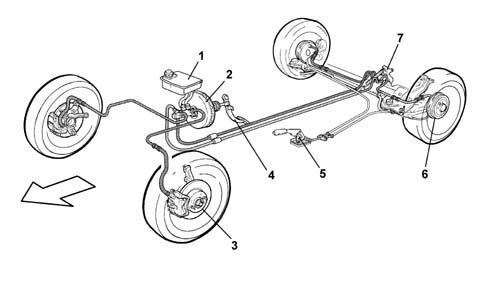
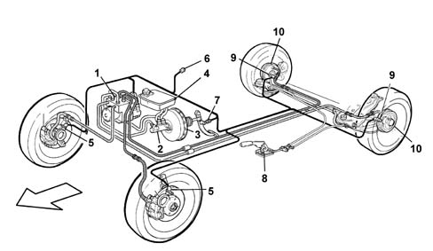
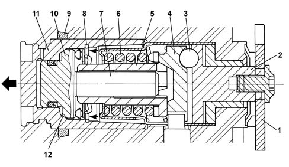

Introduction - BRAKING SYSTEM
- Path
- Descriptions > 33 BRAKING SYSTEM > Introduction - BRAKING SYSTEM
- Kind
- system description
- Applies to
- all engines; all production periods
- Interactive page
- https://sloeber94.github.io/elrnDB-fMltpl/en/#/2892439
Applies to: all engines; all production periods
CONSTRUCTION FEATURES
The vehicle is fitted with self-ventilated front disc brakes with floating calipers and rear drum brakes with self-centring shoes and automatic recovery of the clearance. The braking system is operated by a pedal with a 9' vacuum brake servo and a 13/16' master cylinder. The hydraulic system is the split type with two independent crossover circuits with a load proportioning v alve on the rear brake circuit (versions without ABS).

1, Brake fluid reservor and pump for independent brake circuits 2, Vacuum brake servo 3, Front disc brakes 4, Brake pedal 5, Parking brake control lever 6, Rear drum brakes 7, Load proportioning valve
Bosch A.B.S. 5.3 anti-lock brakes with four active sensors and four channels are available on request.
The system control unit controls the EBD (Electronic Brake force Distribution) function for distributing the braking between the front and rear axles (in this case a conventional load proportioning valve is not fitted).
Mechanical type handbrake with twin cable.

1, Electro-hydraulic control unit 2, Master cylinder 3, Brake servo 4, Brake fluid reservoir 5, Front rpm sensor 6, System failure warning light 7, Brake lights switch 8, Parking brake lever 9, Rear rpm sensor 10, Rear drums
Applies to: all engines; production: da 09/03, da 04/02 a 08/03
CONSTRUCTION FEATURES
Versions equipped with rear disc brakes feature new brake calipers.
These devices differ from similar systems used on other Group vehicles through the pad wear recovery system and consequently the adjustment.
In particular, the direction of rotation of the cylinder whilst replacing the brake pads is always the same as the direction of rotation of the wheels during normal driving.
On the left wheels the cylinder therefore rotates in an anti-clockwise direction and on the right wheels in a clockwise direction.
The diagram below shows a cross section of the brake calipers.

1, Handbrake idler lever 2, Drive transformation device active element 3, Ball 4, Drive transformation device passive element 5, Female screw 6, Reaction spring 7, Worm screw 8, Axial bearing 9, Seal in operating cylinder housing 10, Worm screw head 11, Operating cylinder 12, Clutch surfaces.
The caliper features an irreversible type worm screw, in other words it is capable of transforming axial motion into rotary motion in one direction only and not in the other direction.
In this way the operating cylinder can only come out of the caliper casing and not go back into it.
This device comprises a female screw (5) and a worm screw (7).
The female screw (5) forms one piece with the fixed section of the caliper and is kept in contact with the passive element of the drive transformation device (4) by the reaction spring (6).
The screw (7) forms one piece with the head (10) and can therefore move together with the latter whilst the cylinder is moving.
When the operating cylinder (11) moves axially in the direction shown by the arrow, it acts on the brake pads: either as a result of the activation of the handbrake or following the action of the oil on the inner surface of the head (10) during the normal braking stage.
If the handbrake is activated, the rotation of the lever (1) causes the rotation of the active element of the drive transformation device (2).
Thanks to the presence of three balls (3) on the same number of tilted planes, the rotary motion is transformed into a movement that moves the passive element of the drive transformation device (4).
Given the connection between the passive element (4) and the female screw (5), the latter also moves causing the screw (7) and consequently the piston (11) to move forwards.
During normal braking it is the pressure of the oil acting on the inner face of the head that moves the actual head and consequently the operating cylinder forwards until it is in contact with the brake pads.
It is obvious that when the pads are worn, the movement of the cylinder is greater and under these circumstances the screw (7) is loosened in relation to the female screw (5) by a length equal to the wear of the actual pads.
Whilst the brakes are released the screw cannot tighten on the femal screw because the retraction of the piston is limited, by the seal (9), to a few tenths of a millimeter, absorbed by the operating clearance between the screw and the female screw (about 0.5 mm); the recovery of the wear is therefore guaranteed for subsequent braking.
It becomes obvious that when a wear recovery operation is required, there will be a rotary movment of the head (10) in relation to the cylinder (11).
This movement is impeded by the contact surfaces (12) when the pressure on the inner face of the head is greater than a pre-set limit of around 20 bar.
At these pressure levels the dismantling of the force derived from the action of the oil on the surfaces (12) produces a friction that prevents rotation.
The entire device therefore moves axially, but without recovery.